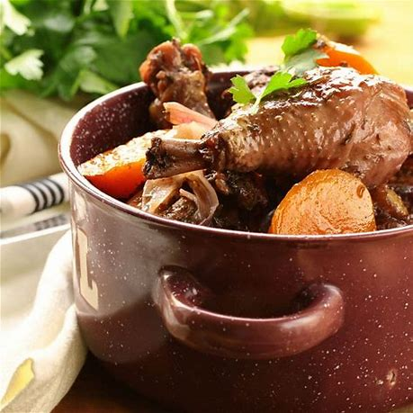

Coq au vin

A classic french recipe, also very simple!
Ingredients
- Salt pepper garlic
- Some Chicken and lardons
- Red wine
- Veal stock
- 1 onion and 2 carrots
- Flour
Steps
- Marinate chicken overnight with onions garlic
pepper, wine
- The next day filter the marinade, but keep it!
- Pat the chicken dry then cook it in your casserole with some oil
- Remove chicken when all sides are colored. Add vegetables in.
- Add flour, mix it well
- Cover with veal stock. Simmer for 2h30.
- Cook the lardons and add them 15min before the chicken is done. Season to taste.